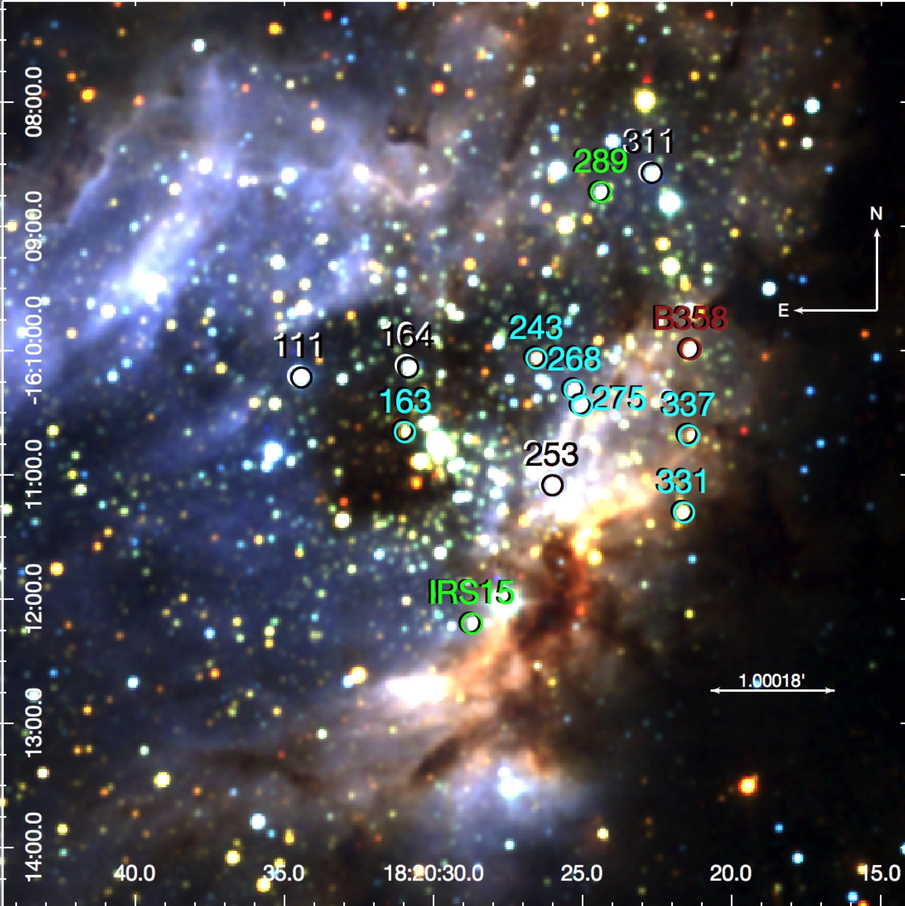

2020-01-20: Our paper about the formation of massive binaries was covered by MPIA's press
office and in the Anton Pannekoek Institute's website.
2017-02-17: Here is a press
release (in Dutch) about our paper about the lack of close binaries amongst the Massive
young stars in M17. Our result was also featured in
iflscience.com .
In order to learn about the formation and early evolution of massive stars I do observational studies of the outcome of massive star formation. In this page you find a compilation of articles that we have published on the topic.
Results
-
Identifying binaries with single-epoch spectroscopy
In this paper present a method to investigate the observed radial velocity distribution of massive stars in young clusters with the goal of identifying binary systems. We show that our method is able to flag the most interesting binary or variable candidates for further follow-up observations with as little as a single-epoch.
-
Spectroscopic binary fraction in M17
Here we determine the observed binary fraction of 27% and an intrinsic binary fraction of 87%, consistent with that of other Galactic clusters. This result is consistent with our migration scenario for the formation of massive binaries, in which massive stars form in wide orbits that harden in the first million years of evolution.
-
Formation of massive close binaries
Here we present the first empirical evidence in favour of migration as a scenario for the formation of massive close binary stars. We find a positive correlation of the radial-velocity dispersion of young OB associations with their age. This is consistent with massive close binaries forming in wide orbits that harden in the first few Myrs of evolution. You can see the press release here (image credit: MPIA graphics department).
-

Lack of close binaries in M17
In this paper we explore the dearth of short-period binaries in the massive star forming region M17. We propose that massive binaries are initially formed at larger separations, then harden or migrate to produce the typical power-law period distribution observed in few Myr-old OB binaries. You can see the press release in Dutch here, and here is a note in English.
-

Massive pre-MS stars in M17
Here we present the first spectroscopically confirmed sample of massive pre-main sequence (PMS) stars in the giant HII region M17. The PMS stars have radii that are consistent with being contracting towards the main sequence and are surrounded by a remnant accretion disk.
-
Spectroscopic variability of massive pre-main-sequence stars in M17
Here we present the first results of our multi-epoch campaign on the massive stellar population of M17. This paper, led by Annelotte Derkink studies the spectroscopic variability mainly of the lines originating in the circumstellar material. Several physical processes could be responsible for the observed variability, some of them could be accretion flows, slow disk winds and/or disk structures.
-
CO bandhead emission
In this paper lead by Hanneke Poorta, we present modelling of the first and second overtone CO bandhead emission and the thermal infrared with an analytic disk model developed by Hanneke. This is the first time that second overtone emission is modelled, and we find that they are very important in order to constrain the density. We also find that the bandheads 4 to 6 of the 1st overtone help constrain temperature.
-
Modelling hydrogen and dust in MYSO disks
In this paper lead by Frank Backs, we present 2D radiation thermo-chemical modelling with PRODIMO of double-peaked hydrogen lines and the SED of two massive pre-main sequence stars in M17.
-
The young stellar content of three giant HII regions
Here we present a photometric and spectroscopic study of massive stars in three HII regions (M8, NGC6357 and G333.6-0.2) and characterised their stellar populations in terms of age and mass ranges.
-
Diffuse interstellar bands in M17
In this paper we measure the properties of the most prominent DIBs in M17 and study these as a function of E(B − V) and RV. We find trends between the strength of the studied DIBs (per unit visual extinction) and RV−1, most notably for the 6196 and 7224 Å DIBs.
-
Massive young stellar objects in 30Dor
We present the results on an X-shooter spectroscopic analysis of the top ten Spitzer MYSO candidates in 30 Dor. As the spectra of the mYSO candidates are contaminated by nebular emission, in this paper Martijn van Gelder developed a scaling method to subtract the contamination from the spectra.